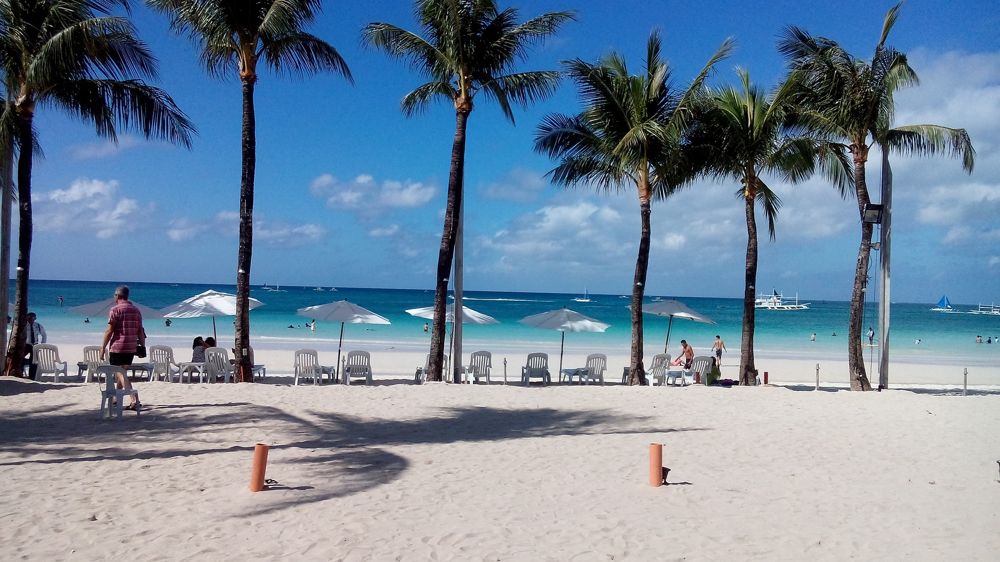
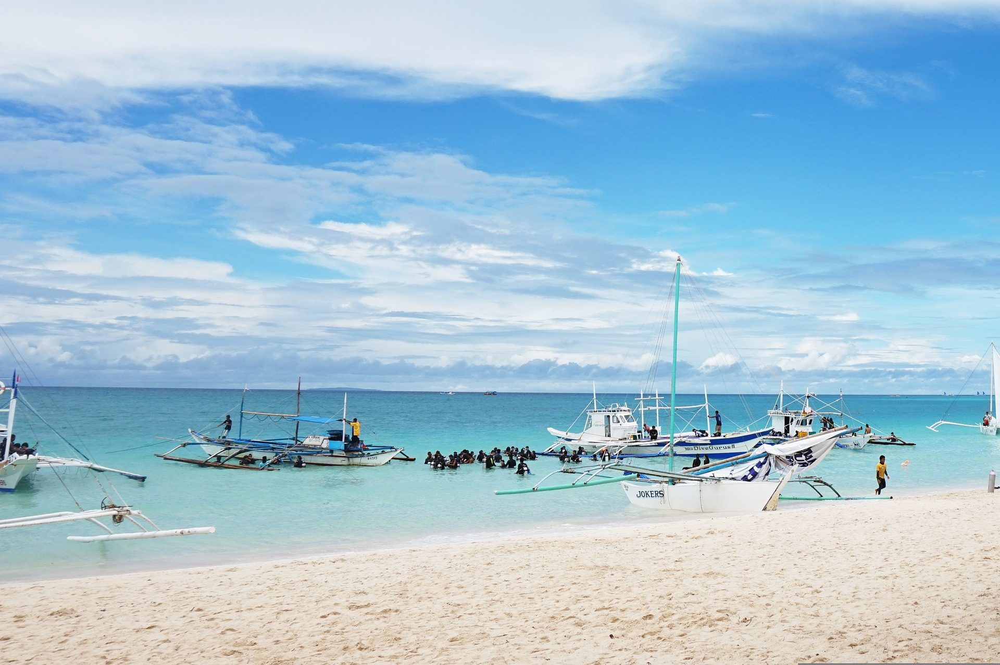
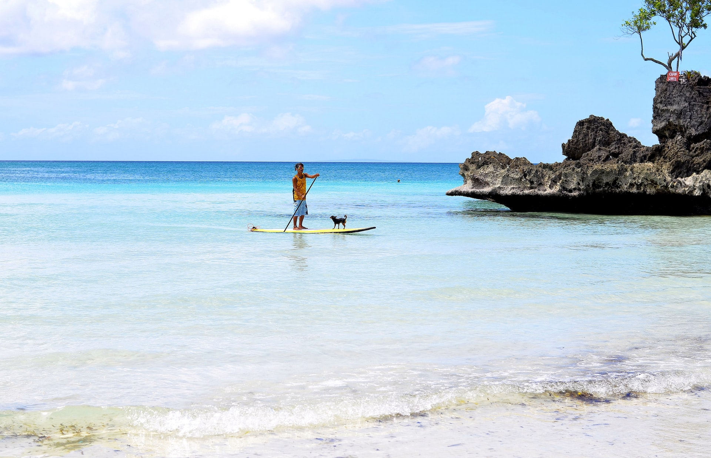
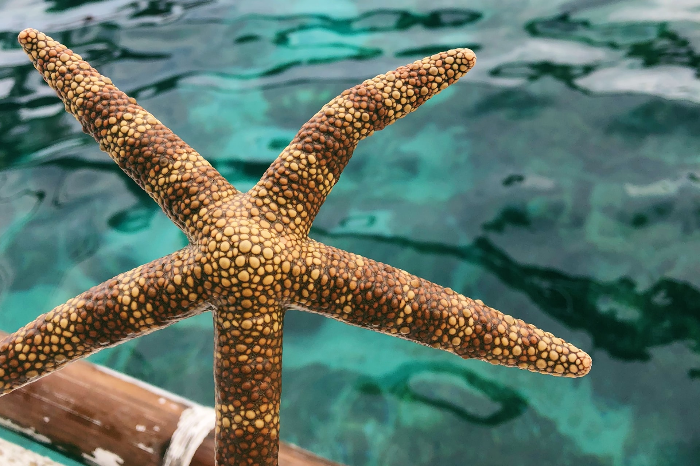

THINGS TO DO IN BORACAY
- Explore White Beach 
- Experience Island Hopping Aventures 
- Try Fun Water Activities 
- Explore the Underwaters 
White Beach is Boracay's main tourist attraction and understandably the most jam-packed area since the most popular activity in the island is the Boracay sightseeing beach trip. Aside from the undeniable charm of the beautiful white sand and sparkling azure waters, everything you need is a stone's throw away from White Beach.
One of the best things to do in the island is to go island hopping. You'll be able to discover and swim in some of its beautiful beaches. You'll also know why the island is on the top of the must-visit places in the world. Top three beaches are Magic Island, Crocodile Island, and Crystal Cove Beach.
The excellent way to bond with your friends and family is to try some of these highly recommended water activities. Some of the best activities are Banana Boat Ride, Paraw Sailing, Fly Fish, and Jet Ski.
One of the highly recommended activities in Boracay is to go underwater and get an in-depth look at the plentiful corals. As someone who is afraid to go to open water, I wasn't able to enjoy this but it doesn't stop me from recommending it. Snorkeling is the way to go! You can also do Scuba Diving, but requires training on how to breathe correctly underwater.
HOW TO GET THERE
When traveling to the Philippines, it is important to know the requirements and travels restrictions established by the government. It is still necessary to have the following:
- Book a Flight to the Philippines
- Complete the Boracay Travel Requirements
- For Vaccinated Visitors: Proof of Vaccination. This can be any of the following:
- VaxCertPH certification
- Vaccination card issued abroad
- For Unvaccinated or Partially Vaccinated Tourist : Negative RT-PCR or Antigen Test. Must be taken within 72 hours prior to departure. RT-PCR tests must be done by any of the accredited laboratories.
- Confirmed hotel or resort booking on the island.
- Roundtrip transportation details
- Valid passport
- Online Health Declaration Card (OHDC).
- Masks are still required in enclosed environments and public transportation.
- Accomplish the Online Health Declaration Card (OHDC)
- Go to Tourist Boracay Website and fill out the form with all the required details and click Submit.
You can fly direct to the Philippines from Canada departing Vancouver Airport (via Philippine Airlines) landing in Manila.
From Manila, you’ll find it’s very easy to travel to Boracay.
You can also check first with your local travel agent.
If you prefer to have stop in Tokyo or Hongkong or Korea, there are other options such as Air Canada, then connect with NAL or Cathey Pacific or Korean Air to Manila.
NOTE: Make sure you have a valid Passport.
INTERESTING & FUN FACTS
- It was Awarded the Best Island Destination
- The Island was Closed for Rehabilitation
- There are two Seasonal Weather Patterns in Boracay
Boracay is a globally recognized island and continues to gain accolades from various organizations worldwide. It was awarded the best island destination by the travel and leisure magazines in 2012. It was also named the world’s most amazing beaches by the Bridal Guide Magazine. It has been ranked as the top 25 best beaches in Asia by trip advisors. It offers the best site for weddings, honeymoons, and marriage proposals.
The full closure of the island took place in April 2018 for the rehabilitation to take place and to resolve other environmental issues.
The two weather patterns are known as Amihan and the Habagat seasons. The Amihan season is distinguished by the little or no rainfall, winds prevailing from the northeast, and moderate temperatures. Habagat on the other side has frequent heavy rainfall, winds prevailing from the west, and hot weather.
Wilstart Team. (2022, May 18). Things To Do In Boracay – The Ultimate Travel Guide.
Wilsart. https://wilstar.com/travel/boracay-vacation-travel-guide/
Felix. (2022, July 22). Top 10 Fascinating Facts About Boracay.
Discover Walks Blog. https://www.discoverwalks.com/blog/manila/top-10-fascinating-facts-about-boracay/